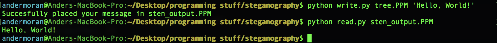

An example of steganography implemented with Python2. Inspired by this video. Steganography is about hiding information in plain sight.

Usage: write.py input_image.PPM 'your secret message'
write.py input_image.PPM 'your secret message'
Usage: read.py output_image.PPM
read.py output_image.PPM